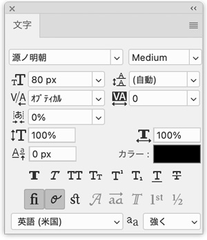
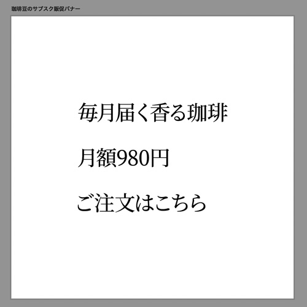
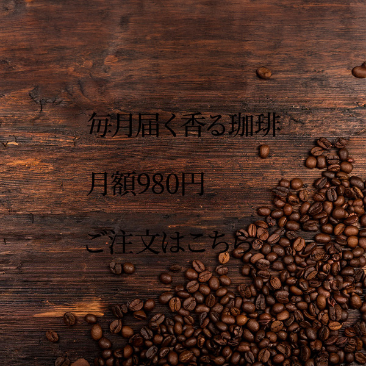
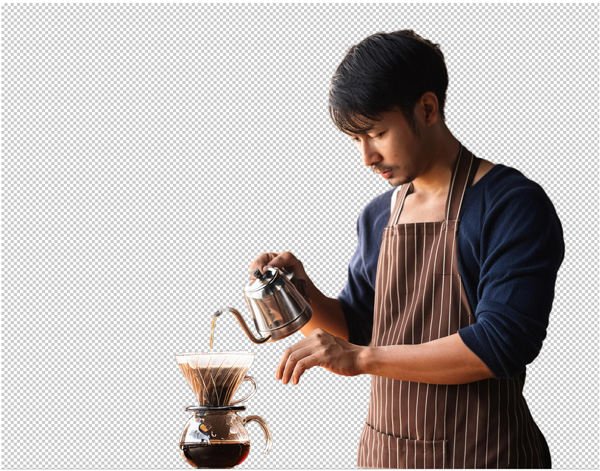
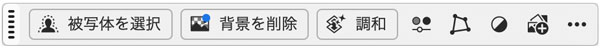
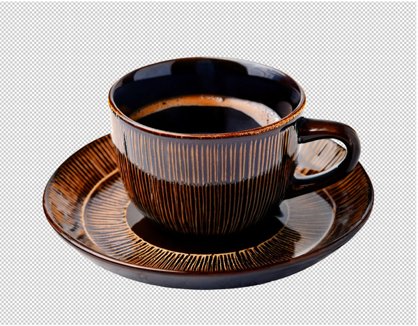
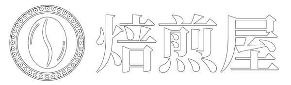
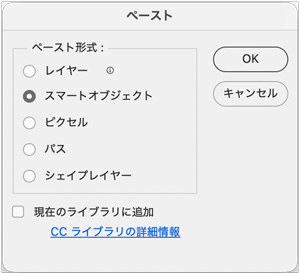

実践バナー編を体験しよう
Step 1 / 6 フォントを選ぶ
- 「07-珈琲豆のサブスク販促バナーをデザインしよう.psd」を開きます
- ラーニングではこの時点で解説はないのですが、開いた「幅1080px、高さ1080px」のアートボードサイズが作成する土台の大きさになります
- 書体の選択は、AdobeFontsの「源ノ明朝」を選択します


Step 2 / 6 背景画像を配置する
- 右下のコーヒー豆の部分を基準に配置する

Step 3 / 6 バリスタの写真を切り抜く
- 「オブジェクト選択ツール」で切り抜き


調和
- 背景に画像にあわせて「バリスタ」の切り抜きを「彩度・輝度」を調整する
- 「調和」の結果は、「v27」より「Beta」のほうがリアリティーがあります

Step 4 / 6 コーヒーカップの写真を切り抜く

Step 5 / 6 画像やテキストをレイアウトする
Illustratorでロゴを作成

- 「スマートオブジェクト」で配置

Step 6 / 6 彩度を落とし全体のトーンをなじませる